Duplex-Tables auf 7,6 MHz einrichten
Für den TMO-Betrieb auf den Amateurfunkfrequenzen müssen die Duplex-Tabellen in der Motorola CPS korrekt konfiguriert werden. Der standardmäßige TX/RX-Split beträgt 7,6 MHz – diese Einstellung muss in den Band- und Kanalparametern hinterlegt werden.
Es gibt zwei Wege die Einstellung vorzunehmen: Methode 1 (über „Mobility and System Parameters“) ist einfacher und sollte bevorzugt werden. Lassen sich die Parameter dort nicht setzen, verwende Methode 2 (über Lab-Mode und „duplex_space_table“).
Hinweis: Alle Angaben ohne Gewähr. Keine Haftung für Schäden an den Geräten. Die Erweiterung kann je nach CPS-Version leicht abweichen.
Methode 1 – Ãœber „Mobility and System Parameters“
-
Codeplug öffnen – CPS starten und den vorhandenen Codeplug
laden oder aus dem Gerät auslesen.

-
Block „Mobility and System Parameters“ finden – In der
Baumstruktur nach diesem Block suchen und erweitern.
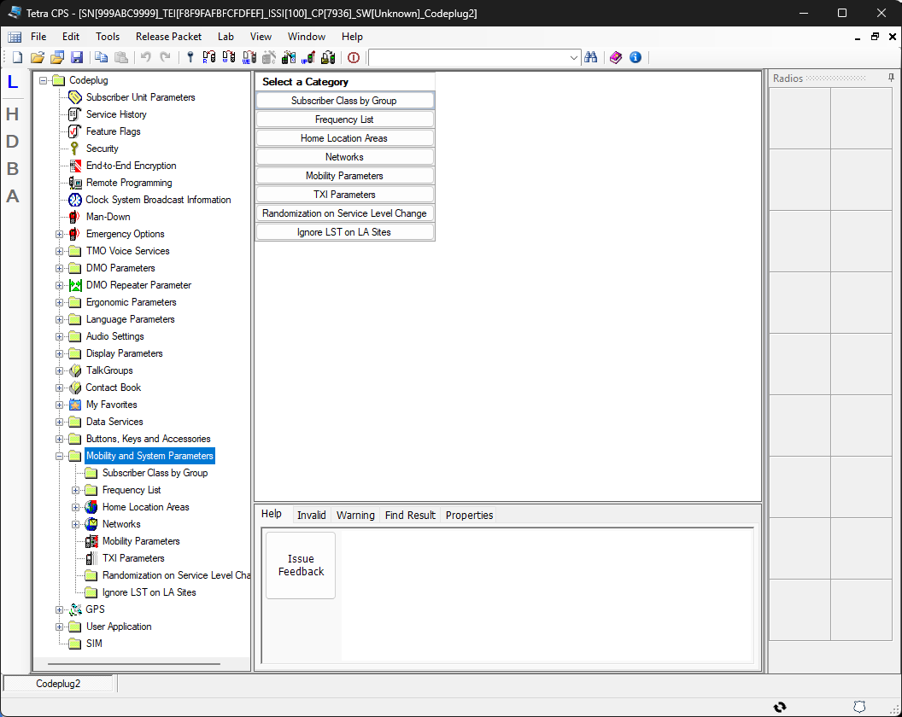
-
Block „Mobility Parameters“ öffnen – Unter dem
vorherigen Block den Parameter-Block aufklappen.
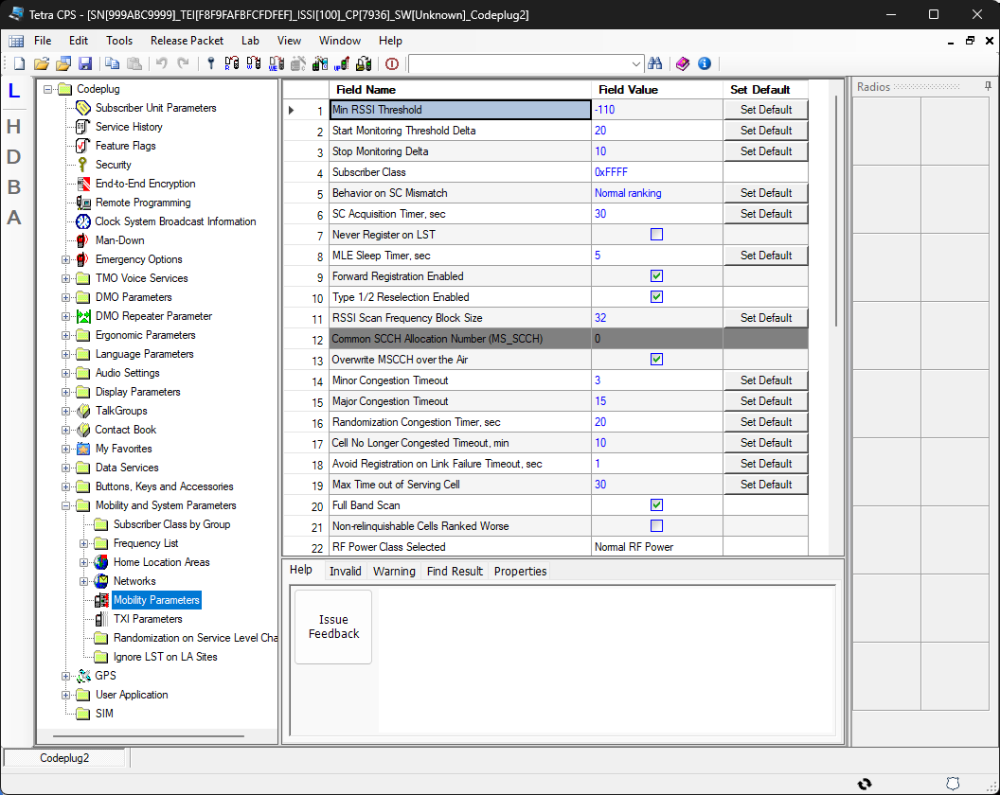
-
Bis zu Zeile 28 scrollen – Die Tabelle mit den Duplex-Table-
Einträgen befindet sich in den unteren Zeilen.
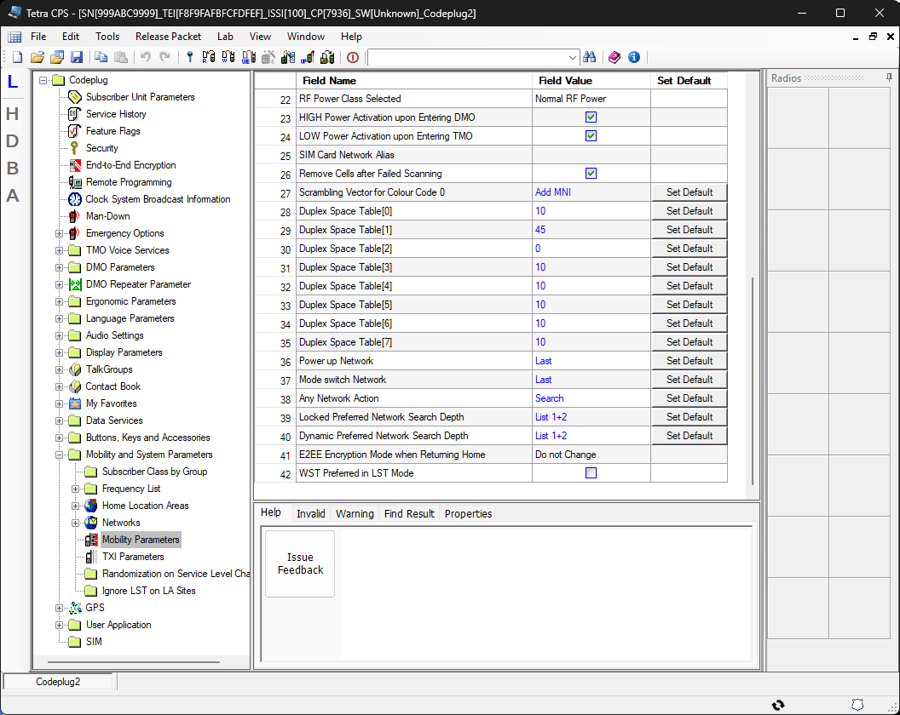
-
Table 1 und Table 7 anpassen – In den Zeilen für Table 1 und
Table 7 den Wert
45durch 7,6 ersetzen.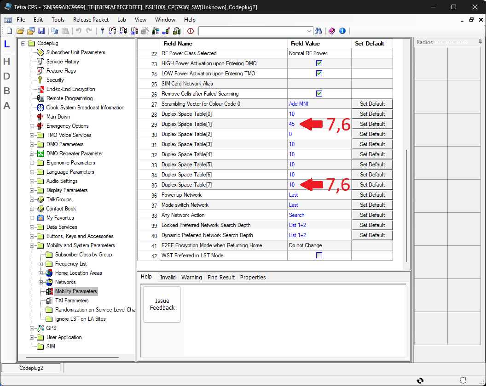
-
Write Entire Codeplug – Den vollständigen Codeplug ins Gerät
schreiben. Write Codeplug reicht nicht – nur Write Entire
Codeplug überträgt die Duplex-Tables.
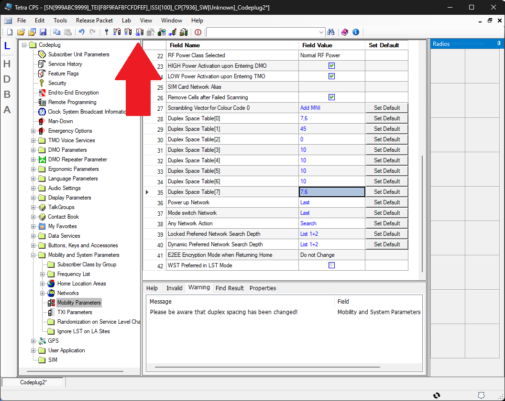
Methode 2 – Ãœber Lab-Mode und „duplex_space_table“
-
Codeplug öffnen – CPS starten und den Codeplug laden.

-
Lab-Mode öffnen – Ãœber View → Lab Mode aktivieren.
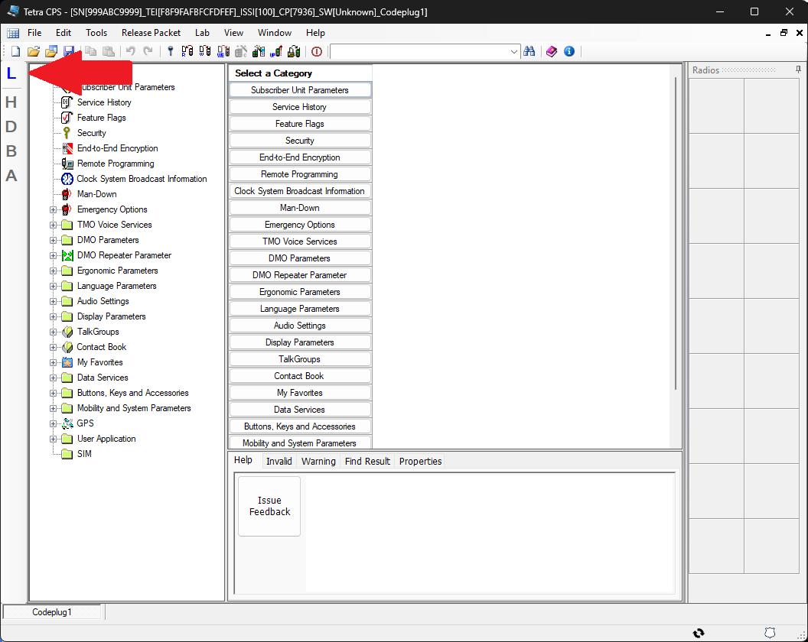
-
Auf Dezimal umschalten – Im Lab-Mode die Anzeige auf
Dezimal umstellen.
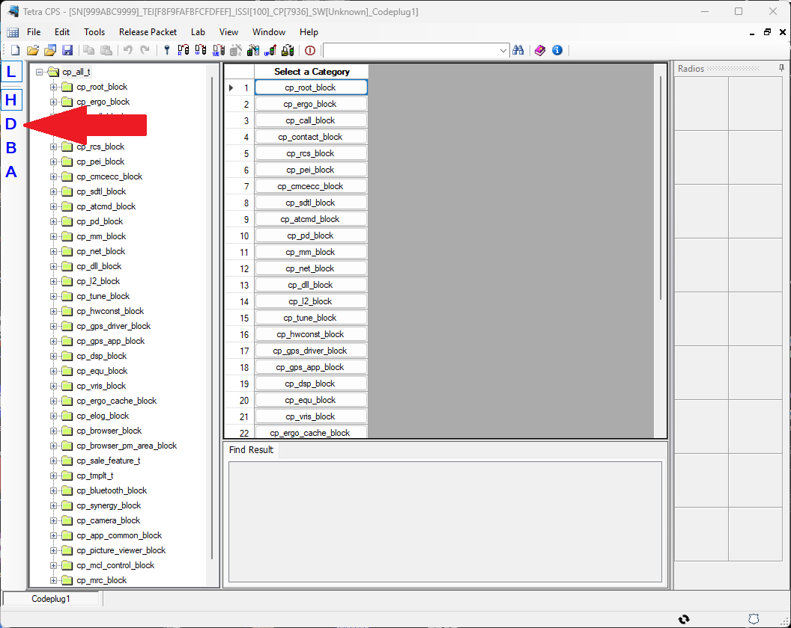
- Block „cp_net_block“ erweitern – In der Baumstruktur aufklappen.
-
Auf Block „net_data“ gehen – Unter
cp_net_block den Block net_data auswählen.
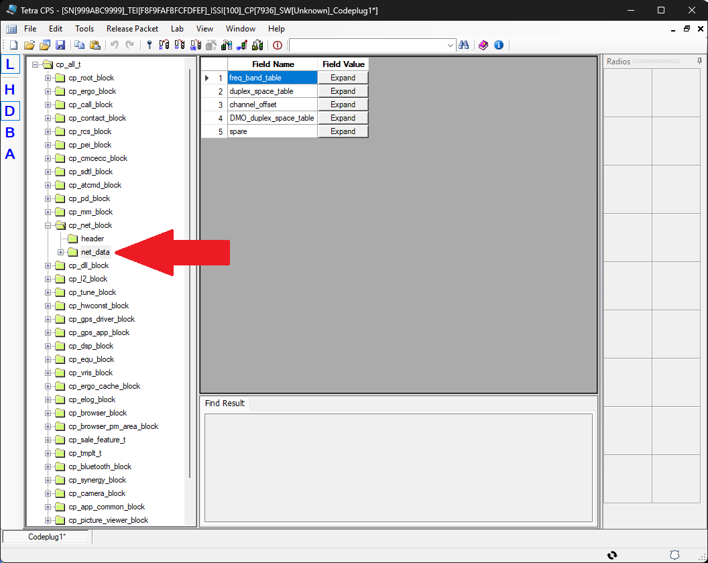
-
„duplex_space_table“ auswählen und erweitern – Unter
net_data die Tabelle duplex_space_table aufklappen.
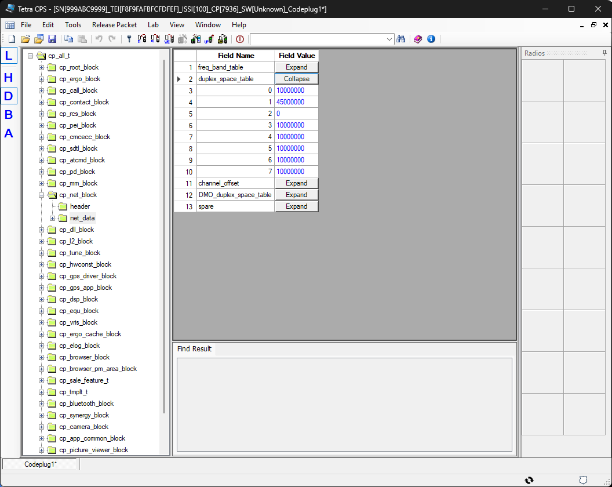
-
Table 1 und Table 7 anpassen – In Table 1 und Table 7
den Wert
45000000durch 7600000 ersetzen.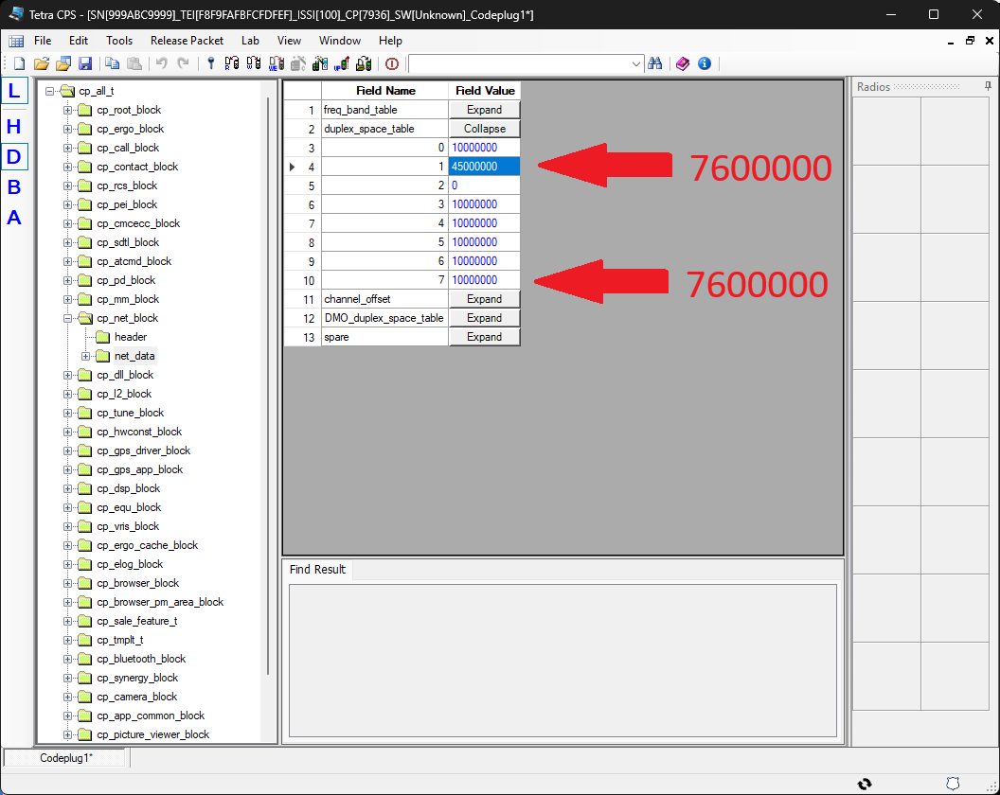
-
Lab-Mode verlassen – Ãœber View → Lab Mode
deaktivieren. Die Änderungen werden dadurch validiert und gespeichert.
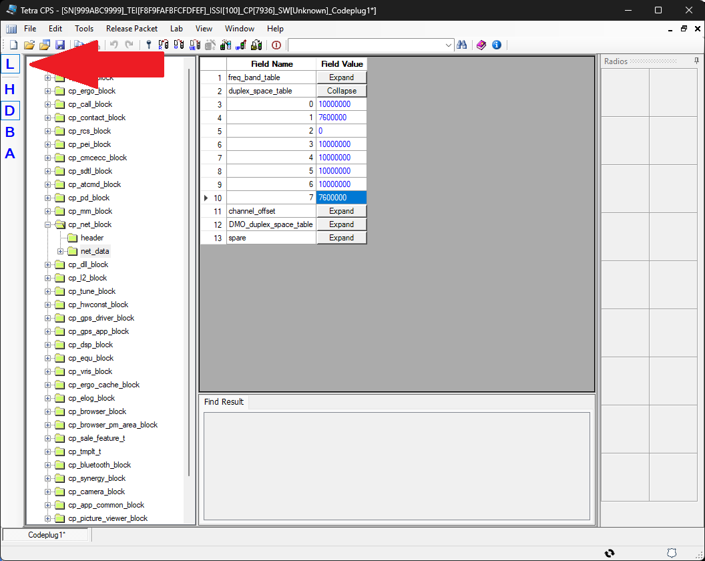
-
Write Entire Codeplug – Den vollständigen Codeplug ins Gerät
schreiben.
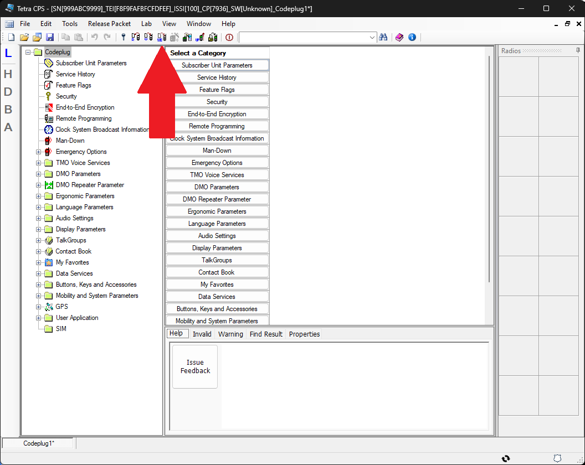